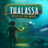

 Thalassa Edge of the Abyss
Detalles
 |
|
| Tiempo de juego | No Jugado |
| Última actividad | Nunca |
| Añadido | 11/13/2024 0:35:38 |
| Modificado | 11/13/2024 1:10:02 |
| Estado de finalización | No Jugado |
| Librería | Playnite |
| Fuente | PORCHE |
| Plataforma | PC (Windows) |
| Fecha de lanzamiento | 8/1/2024 |
| Puntuación de la Comunidad | 82 |
| Puntuación de la Crítica | |
| Puntuación de usuario | |
| Género | Aventura Indie Rol |
| Desarrollador | Sarepta Studio |
| Editor | Team17 Digital Ltd |
| Característica | Cloud Saves Compat. Total Con Mando Logros De Préstamo Familiar Un Jugador |
| Enlaces | Punto de encuentro Discusiones Guías Noticias Página de la tienda PCGamingWiki Logros |
| Tag | Ambientales Aventura Buena trama Detectives Drama Emocionales Exploración Ficción interactiva Indie Inmersivo Misterio Narrativos Primera persona Psicológicos Rol Simulador de caminar Subacuáticos Un jugador |
Descripción
Thalassa es un drama psicológico en primera persona para un único jugador ambientado en el año 1905. Eres Cam, te dedicas al buceo profundo y formas parte de una tripulación de gente aventurera y pionera a bordo del Thalassa. Mientras os preparáis para sacar un galeón español del océano, lo que debería haber sido un acontecimiento histórico se convierte en el peor día de tu vida.
Tras tomarte un tiempo para recuperarte, descubres que el Thalassa se ha hundido en circunstancias misteriosas. La tripulación de la nave ha desaparecido y deberás adentrarte en las profundidades para acceder al barco una vez más. En el mar, sin más compañía que la de Bailey, el técnico, guiándote desde la superficie, depende de ti darle sentido a las pistas que encontrarás entre los restos del barco y desvelar qué ha ocasionado el naufragio.
Sumérgete en una historia emocionante de autodescubrimiento y dolor en el Thalassa.

Conoce una historia que se adentra en la complejidad de las emociones e interacciones humanas y descubre las intrincadas relaciones de la tripulación. Desvelarás las luchas personales de cada miembro de la tripulación del Thalassa y las múltiples formas se sentir una pérdida. El dolor se manifiesta de muchas maneras, pero la vida sigue.

Eres la única persona capaz de bucear que queda, por lo que solo tú puedes regresar al Thalassa, que ahora yace en el fondo del mar. Muévete por un entorno extraño y a la vez hermoso y encuentra las pistas que te ayudarán a revelar los acontecimientos que han conducido al desastre.

Siente la tranquilidad y el aislamiento de la exploración submarina mientras exploras los restos del barco. Para poder seguir explorando la nave, tendrás que encontrar los objetos necesarios para desbloquear los obstáculos en tu camino.
Tras tomarte un tiempo para recuperarte, descubres que el Thalassa se ha hundido en circunstancias misteriosas. La tripulación de la nave ha desaparecido y deberás adentrarte en las profundidades para acceder al barco una vez más. En el mar, sin más compañía que la de Bailey, el técnico, guiándote desde la superficie, depende de ti darle sentido a las pistas que encontrarás entre los restos del barco y desvelar qué ha ocasionado el naufragio.
Sumérgete en una historia emocionante de autodescubrimiento y dolor en el Thalassa.
Conoce una historia que se adentra en la complejidad de las emociones e interacciones humanas y descubre las intrincadas relaciones de la tripulación. Desvelarás las luchas personales de cada miembro de la tripulación del Thalassa y las múltiples formas se sentir una pérdida. El dolor se manifiesta de muchas maneras, pero la vida sigue.
Eres la única persona capaz de bucear que queda, por lo que solo tú puedes regresar al Thalassa, que ahora yace en el fondo del mar. Muévete por un entorno extraño y a la vez hermoso y encuentra las pistas que te ayudarán a revelar los acontecimientos que han conducido al desastre.
Siente la tranquilidad y el aislamiento de la exploración submarina mientras exploras los restos del barco. Para poder seguir explorando la nave, tendrás que encontrar los objetos necesarios para desbloquear los obstáculos en tu camino.